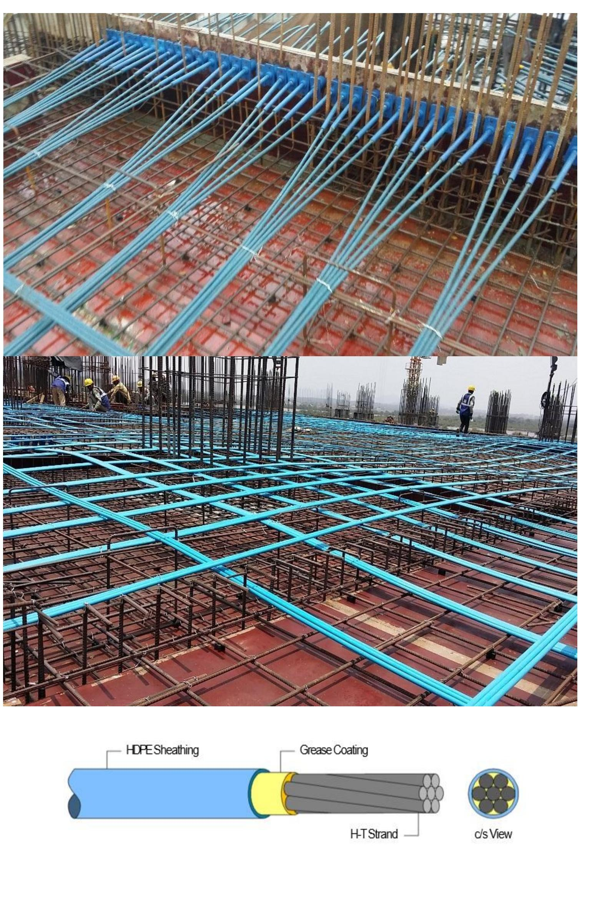
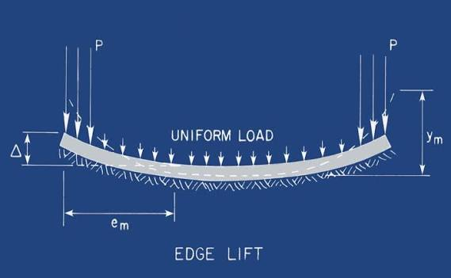
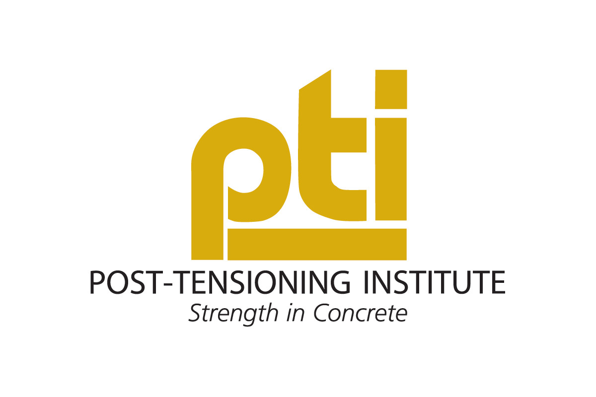
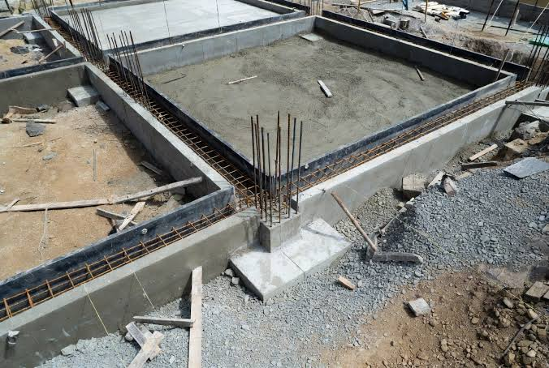

CEID provides comprehensive structural engineering services for transportation, municipal, commercial, and public infrastructure projects across Texas. Our experienced engineers design safe, durable, and cost-effective structures that meet project objectives while complying with applicable local, state, and federal engineering standards.
From concept development through final design and construction support, we work closely with clients, architects, contractors, and public agencies to deliver structural solutions that prioritize safety, functionality, and long-term performance.
Using advanced engineering software and industry best practices, CEID delivers innovative structural solutions that enhance resilience, improve constructability, and support the successful completion of infrastructure projects throughout Texas. Our commitment to quality, technical excellence, and client collaboration ensures every project is designed to meet today's needs while supporting future growth.
Civil Engineering & Innovative Design, LLC provides professional PTI post-tension foundation design services for residential, commercial, and light industrial developments. Our engineers design post-tensioned slab-on-ground foundation systems in accordance with Post-Tensioning Institute (PTI) recommendations, applicable building codes, and project-specific geotechnical reports. We develop economical and structurally efficient foundation solutions that improve performance, minimize cracking, and accommodate varying soil conditions.
Working closely with architects, geotechnical engineers, contractors, and project owners, we prepare complete post-tension foundation plans, tendon layouts, structural calculations, and construction details that support efficient permitting and construction. Our commitment to quality engineering, innovative design, and responsive client service ensures foundations that provide long-term durability, structural reliability, and cost-effective performance for every project.

PTI Edge Ligting:


Civil Engineering & Innovative Design, LLC provides comprehensive conventional foundation design services for residential, commercial, industrial, and institutional projects. Our engineers design reinforced concrete slab-on-grade, spread footing, pier-and-beam, mat foundation, and other conventional foundation systems based on project requirements, structural loading, and geotechnical recommendations. Every design is developed in accordance with applicable building codes and industry standards to ensure safety, durability, and long-term performance.
We collaborate closely with architects, geotechnical consultants, contractors, and owners throughout the design process to deliver practical, efficient, and cost-effective foundation solutions. Our services include structural analysis, foundation plans, reinforcing details, design calculations, and construction support, helping clients achieve reliable foundations that meet project schedules, budget objectives, and site-specific conditions. At Civil Engineering & Innovative Design, LLC, we are committed to delivering innovative engineering solutions that provide a strong foundation for every successful project.
